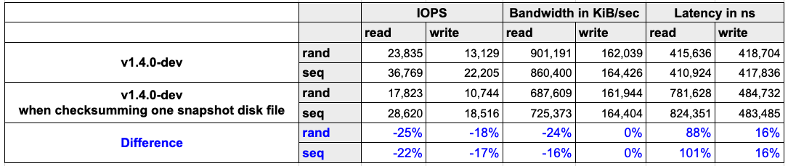
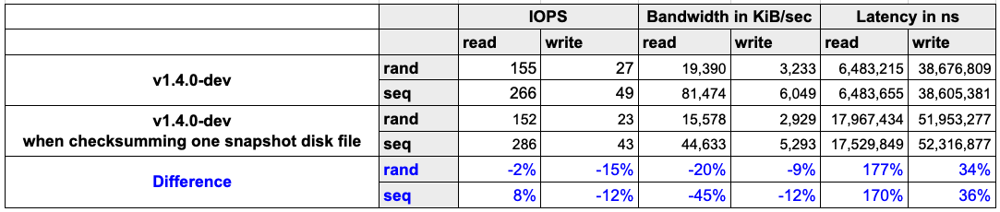

|
本文档采用自动化机器翻译技术翻译。 尽管我们力求提供准确的译文，但不对翻译内容的完整性、准确性或可靠性作出任何保证。 若出现任何内容不一致情况，请以原始 英文 版本为准，且原始英文版本为权威文本。 |
|
这是尚未发布的文档。 SUSE® Storage 1.12 (Dev). |
快照数据完整性检查
Longhorn能够对快照磁盘文件进行哈希，并定期检查其完整性。
简介
Longhorn系统支持卷快照，并将快照磁盘文件存储在本地磁盘上。然而，由于之前缺乏快照的校验和，无法检查快照的数据完整性。因此，当数据因底层存储中的位腐蚀等原因而损坏时，无法检测到损坏并修复副本。在应用此功能后，Longhorn能够对快照磁盘文件进行哈希处理，并定期检查其完整性。当一个副本中的快照磁盘文件损坏时，Longhorn将自动启动重建过程以修复它。
设置
全局设置
-
snapshot-data-integrity
此设置允许用户启用或禁用快照哈希和数据完整性检查。可用选项如下：
-
disabled：禁用快照磁盘文件哈希和数据完整性检查。
-
enabled：启用定期快照磁盘文件哈希和数据完整性检查。为了检测由于位腐蚀或其他问题引起的、文件系统无法察觉的快照磁盘文件损坏，Longhorn系统会定期对文件进行哈希，并查找损坏的文件。因此，在定期检查期间，系统性能将受到影响。
-
fast-check：启用快照磁盘文件哈希和快速数据完整性检查。Longhorn系统仅在快照磁盘文件尚未哈希或修改时间发生变化时对其进行哈希。在此模式下，无法检测到文件系统无法察觉的损坏，但可以将对系统性能的影响降至最低。
-
-
snapshot-data-integrity-immediate-check-after-snapshot-creation
哈希快照磁盘文件会影响系统性能。可以禁用即时快照哈希和检查，以最小化创建快照后的影响。
-
snapshot-data-integrity-cronjob
使用unix-cron字符串格式定义的计划指定了Longhorn检查快照磁盘文件数据完整性的时间。
哈希快照磁盘文件会影响系统性能。建议在非高峰时段运行数据完整性检查，并减少检查的频率。
性能影响
为了检测数据损坏，需要计算快照磁盘文件的校验和。这些计算会消耗存储和计算资源。因此，存储性能将受到负面影响。为了清楚了解影响，我们在对磁盘文件进行校验和时对存储性能进行了基准测试。读取IOPS、带宽和延迟受到负面影响。
-
环境
-
主机：AWS EC2 c5d.2xlarge
-
CPU：Intel® Xeon® Platinum 8124M 处理器 @ 3.00GHz
-
Memory（内存）：16 GB
-
网络：最高10Gbps
-
Kubernetes: v1.24.4+rke2r1
-
-
结果
-
磁盘：200 GiB NVMe SSD作为实例存储
-
100 GiB 快照，包含完整的随机数据

-
-
磁盘：200 GiB 吞吐量优化的 HDD (st1)
-
30 GiB 快照，包含完整的随机数据

-
-